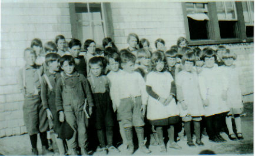
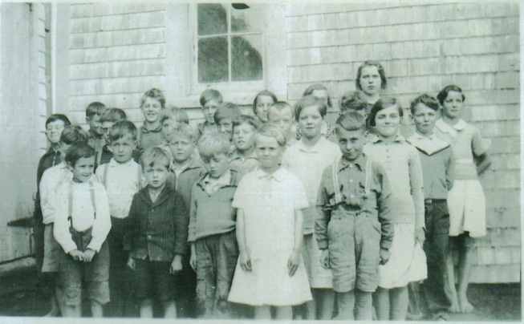
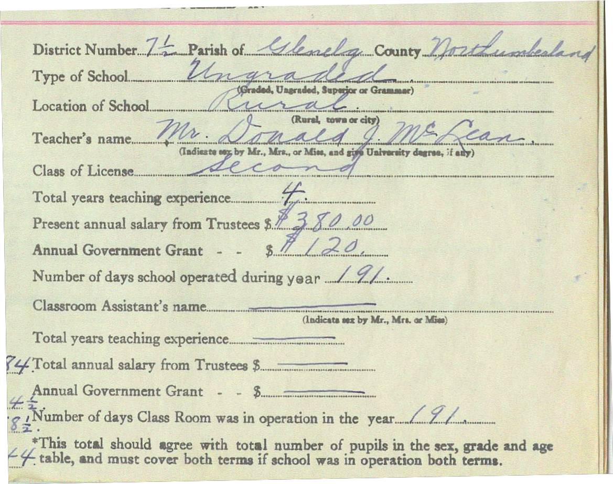
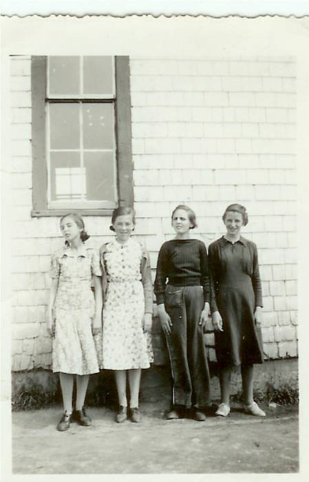

Little Branch – 1929
Little Branch School
The Little Branch School sits at the junction of Route 117 and the Little Branch Road (formerly the MacKenzie Road). A. W. MacDougall in his book, Black River and its First Settlers, tells us that the first school was erected about 1850; it burned shortly thereafter but was soon replaced. The Little Branch School was in District 71/2 in the Parish of Glenelg Parish in Northumberland County. An out door toilet, with separate doors for boys and girls, can be seen perched over the cove just beyond the school.
The Little Branch Schools served children from along the Branch Road, Hexham to the end of the Victoria Bridge and along the south side of the Black River as far as the community hall.
During the year 1933-34, it served 50 students with a few ending their schooling by Christmas and a few commencing their school starting in January; the teacher was Donald J. MacLean who held a Second class license.
In 1939, The Little Branch School became one of seven schools in the newly-created Miramichi Rural High School district providing instruction only to the end of Grade Six. Students in the higher grades travelled by bus to the newly constructed Miramichi Rural High School
In the case of the Little Branch School, there was a little wash room with a pump and sink directly beyond the entry to the left. In my time, however, the sink worked but the pump did not so students were designated to take turns carrying water from my home to the school. The shed on the right was used to store wood; the double outhouse was further right perched on the edge of the bank.
Little Branch School in 1929
Thanks to Della Adams ONeil

Little Branch School in 1929
Thanks to Della Adams O’Neil

Little Branch 1933
Little Branch-1934

A section of the school Register for the Little Branch School , District 71/2, for the school year ending June 1934; the teacher was Donald J. McLean who held a Second Class License, had taught for four years and was paid $380.00 by the District and $120 in the form of an annual government Grant. Following is a list of students who registered that year but not all attended both terms:
Cameron, Edith
Cameron, Iona
MacDougall, Douglas
Cameron, Wilna
Glendenning, John
Watling, Marjorie
Fowlie, Dorothy
Glendenning, Elinor
Harper, Thomas
MacDougall, Stella
MacLean, Allan
MacLean, Ernest
MacLean, Guy
Fowlie, Marjorie
Harper, Charles
Harper, William
Cameron, Blanche
MacLean, Catherine
Watling, Winfield
Adams, Melvin
Fowlie, Bertha
Fowlie, Elizabeth
Glendenning, Kenneth
MacLean, Hugh
Adams, Eunice
Adams, Wilfred
Godfrey, Nellie
Godfrey, Robert
Harper, Helen
MacDonald, John
MacLean, Jennie
MacLean, Ian
Glendenning, Norman
MacDougall, Burville
MacDougall, George
MacDougall, Harold
MacDougall, Margaret
Watling, Roy
Williston, Lois
Adams, Clifford
Adams, Gordon
Adams, Walter
Godfrey, Dorothy
Adams, Elmer
Adams, Edwin
Fowlie, Theodore
MacLean, Frances
Fowlie, Byron
Fowlie, Constance
School visitors included Mrs. R. Harper, Mrs. Sam Fowlie, Mrs. Sinclair Williston, Mrs. Alfred MacLean, F. F. Fowlie, Mrs. James Watling and Isobel Cameron.
Douglas MacDougall, Marjorie Watling, Helen Harper and Lois Williston had perfect attendance during the first term but no one had perfect attendance during the second

Little Branch School - 1938

Back row: Catherine MacDougall, George Watling, Don Glendenning, Mildred MacDonald, Frances MacLean and Murray MacNaughton. Front row: Curtis Adams, Kenneth MacDonald, Mabel MacLean and Cameron MacDonald taken at the Little Branch School in 1938. (Photo courtesy of Bertie MacLean) – Thanks Kay
.